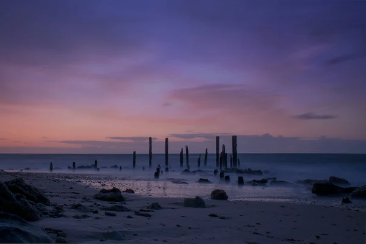

Home › Wine regions › McLaren Vale
McLaren Vale wine region

Photo: Terrence Thomas on Unsplash
Mediterranean vineyards between the Mount Lofty Ranges and Gulf St Vincent, south of Adelaide: rich Shiraz and Australia's finest old-vine Grenache.
Climate and soil
Mediterranean: warm, dry summers, mild winters and sea breezes off Gulf St Vincent, with the Mount Lofty Ranges sheltering the east. The geology is unusually varied, from ancient siltstones and limestones to ironstone gravels and deep sands, and local mapping has divided the vale into many districts by rock type.
Key areas and appellations
Fleurieu zone, Blewitt Springs, Seaview, McLaren Flat, Willunga, Sellicks Foothills, Kangarilla, Onkaparinga Hills
Good to know
John Reynell planted vines at Reynella in 1838, among South Australia's first, and Thomas Hardy's Tintara winery followed later in the century. Old dry-grown bush-vine Grenache, especially on the sands of Blewitt Springs, now makes fragrant, lighter reds that rival the classic dense Shiraz. Growers here led Australia's push on sustainable viticulture, and Mediterranean grapes such as Fiano, Vermentino and Nero d'Avola are spreading.
The grapes of McLaren Vale
- Syrah / Shiraz (red): blackberry, pepper, smoke. Best known in Rhône, Barossa, Washington.
- Garnacha / Grenache (red): strawberry, cherry, spice. Best known in Spain, Rhône, Sardinia.
- Cabernet Sauvignon (red): blackcurrant, cedar, graphite. Best known in Bordeaux, Napa Valley, Coonawarra.
- Fiano (white): pear, honey, almond. Best known in Campania.
Notable producers in McLaren Vale
- d'Arenberg
- Yangarra
- Wirra Wirra
- Coriole
- SC Pannell
- Chapel Hill
- Hardys (Tintara)
- Clarendon Hills
- Mitolo
- Samuel's Gorge
- Thistledown
McLaren Vale wines to try
Yangarra Estate Old Vine Grenache
McLaren Vale · McLaren Vale GI (Blewitt Springs) · Grenache
Translucent Grenache from sandy Blewitt Springs soils: raspberry, rose petal and Asian spice with silky, fine-grained tannins.
Food: Duck with five-spice
Food to try with McLaren Vale wines
- Steak: Firm tannins in Cabernet and Tempranillo cut through the fat and char of a seared steak, while peppery Shiraz echoes the sauce.
- Roast leg of lamb: Lamb's rich fat and rosemary call for structured reds; Cabernet's cassis and cedar and Rioja's savoury oak are the classic partners.
- Shepherd's pie: Peppery, juicy Grenache and Shiraz match savoury lamb mince and gravy without overwhelming a homely dish.
- Toad in the hole: Soft, juicy Merlot and Grenache have enough fruit for pork sausages and onion gravy, with gentle tannins that suit the batter.
- Venison stew: Gamey venison loves Syrah's dark fruit, pepper and smoky notes, and Grenache-led Rhône blends add warmth for a winter stew.
- Ratatouille: A Provençal dish deserves Provençal wines: dry rosé or a supple Grenache red matches the herbs, tomato and olive oil.
More wine regions in Australia
See McLaren Vale on the wine map
The Wine Reference newsletter
New wines, stories and career guides, one email a week at most.
Over 18s only. Unsubscribe any time with one click. Your email is stored securely by Kit and never shared.
Support The Wine Reference
This guide is free, with no paywall. If it helped you choose a bottle, you can buy me a glass and keep it growing.
🍷 Buy me a glass